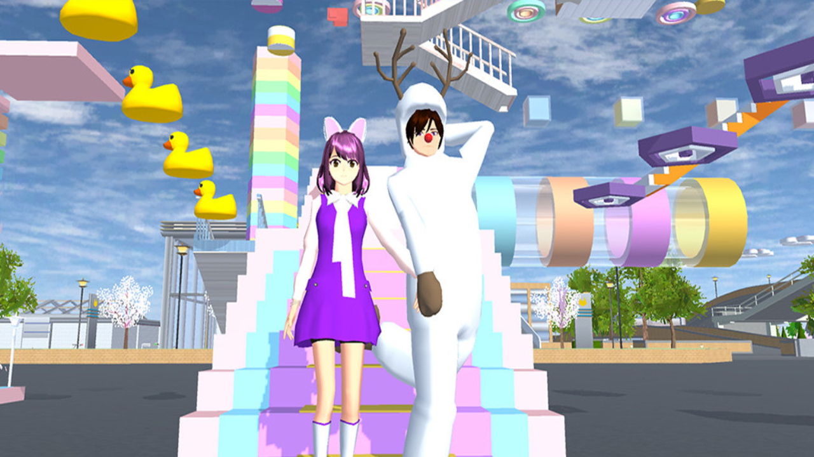
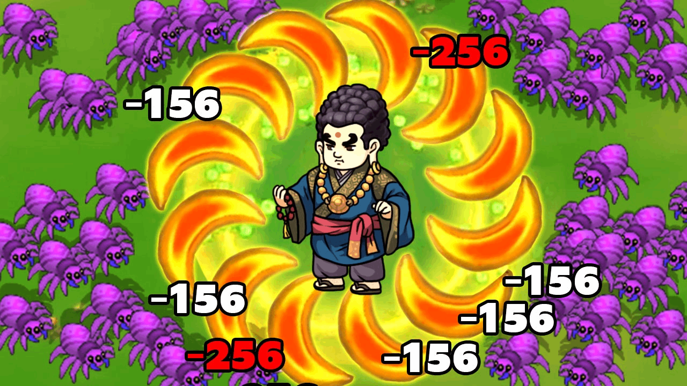
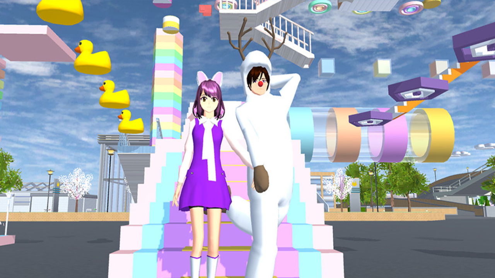
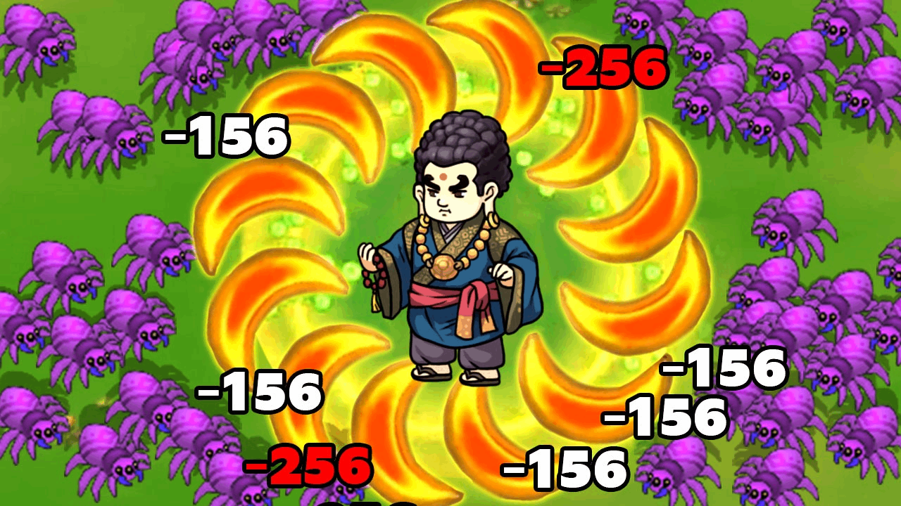

Our original intention and vision
We were born out of love for games, and our mission is to "create games that everyone loves." We always adhere to the concept of "player needs first" and listen to the voice of users from creative conception to detail polishing: lightweight gameplay adapts to fragmented time, diverse themes cover different interests, and carefully create a warm virtual world. I hope that every work can become a bond that connects emotions, allowing players to gain happiness, resonance and love in exploration - this is our persistent pursuit of "games for everyone", and we also look forward to writing a game story that belongs to everyone with you.
We were born out of love for games, and our mission is to "create games that everyone loves." We always adhere to the concept of "player needs first" and listen to the voice of users from creative conception to detail polishing: lightweight gameplay adapts to fragmented time, diverse themes cover different interests, and carefully create a warm virtual world. I hope that every work can become a bond that connects emotions, allowing players to gain happiness, resonance and love in exploration - this is our persistent pursuit of "games for everyone", and we also look forward to writing a game story that belongs to everyone with you.